About the Global Isolation Survey
The Global Isolation Survey aims to foster the increased worldwide use of seismic isolation through the dissemination of knowledge about how seismic isolation is being utilized in different countries.
Mission
Our goal is to gather and freely share information about national and regional challenges and successes with the use of seismic isolation around the world.
We are an international collaboration of design professionals and academics with decades of seismic isolation experience, in many cases experience that extends from the very beginnings of the use of the technology in our respective countries.
Team
Partners
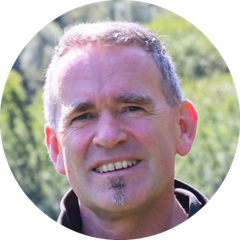
Dr. Ian Aiken, PESeismic Isolation Engineering, Inc.Berkeley, California, USA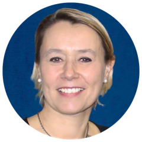
Prof. Alessandra AprileUniversity of FerraraFerrara, Italy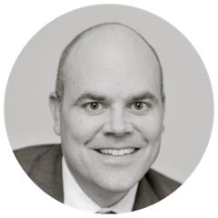
Dr. Cameron Black, PESeismic Isolation Engineering, Inc.Berkeley, California, USA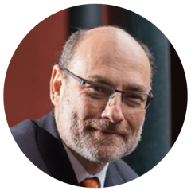
Prof. Ruben BoroschekUniversity of ChileSantiago, Chile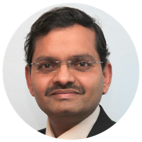
Dr. Amarnath Kasalanati, PEPEER Center, University of California, BerkeleyBerkeley, California, USA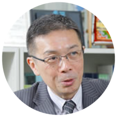
Prof. Masaru KikuchiHokkaido UniversitySapporo, Japan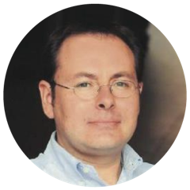
Dr. Rodrigo RetamalesSeismic Intelligence SpASantiago, Chile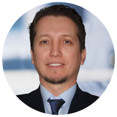
Dr. Bahadır ŞadanOBS Engineering Consulting Ltd.Istanbul, TurkeyResearch team
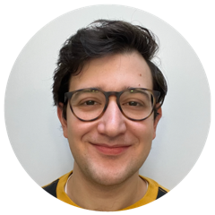
Ömer AkyurtSF State UniversitySan Francisco, California, USA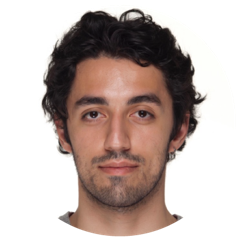
Kerim Efe ÖzcanlıReno, Nevada, USAPartner organizations
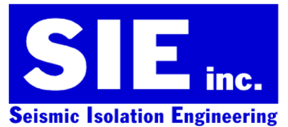
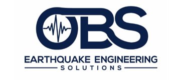
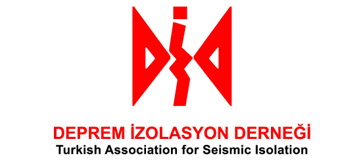
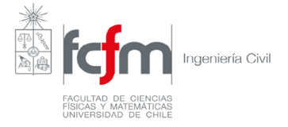
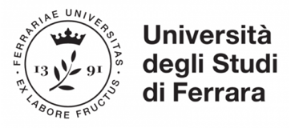
Contact
For any inquiries please email info@globalisolationsurvey.org.